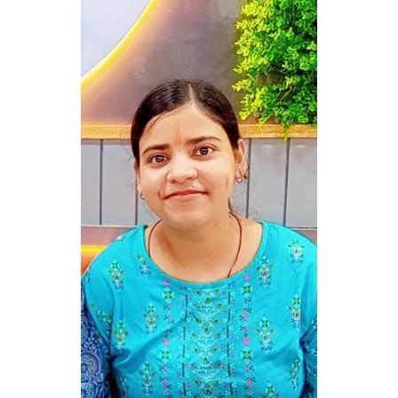

Himanshi Prajapati

Summary
A experienced Quality Assurance Engineer , seeking for an job opppurtunity where i can utilise my knowledge to obtain better results.
Education
- Bachelor of Technology(Computer Science and Engineering) from United college of engineering and management ,Prayagraj,U.P. in year 2016-2020.
Experience
- Quality Assurance Engineer in TCS from April 2021- October 2022.
Skills
- C
- Java
- HTML
- SQL
- Maths and statistics
Training and Certification
- Android App Development from Spectrum Technologies in year 2019.